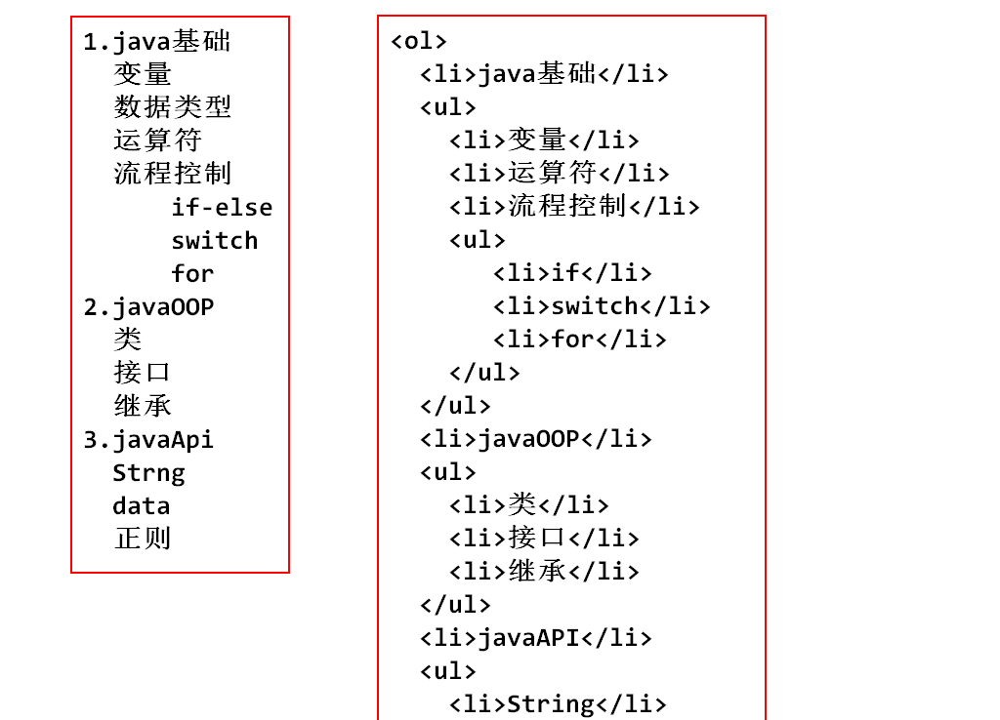
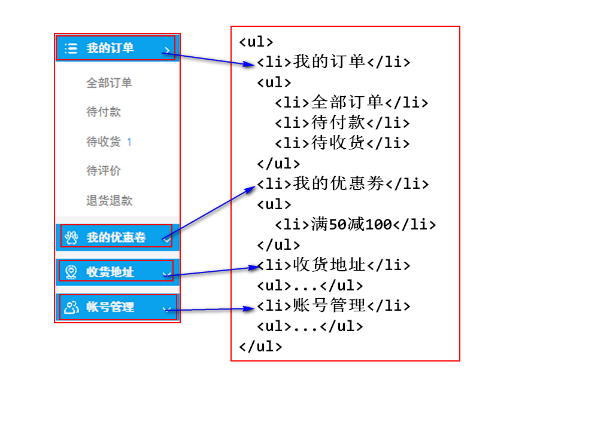
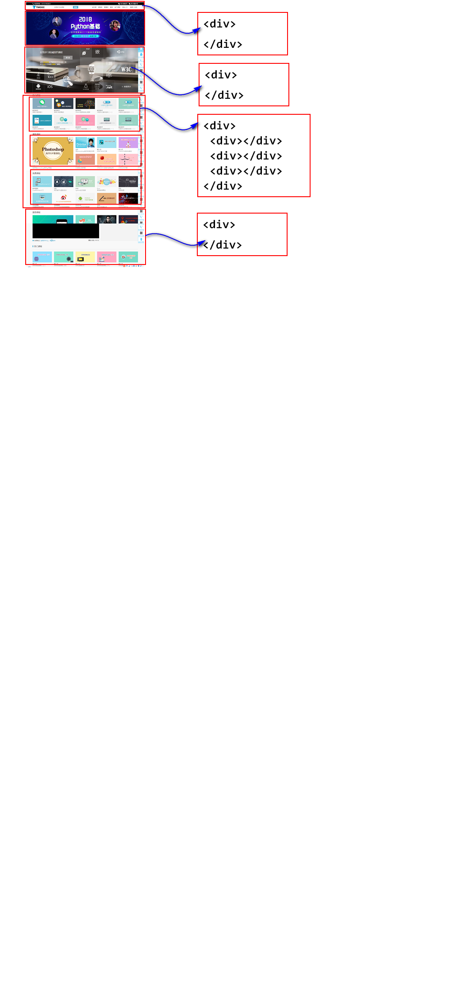

HTML-用来勾勒出网页的结构和内容--骨架(1.5天)
CSS-样式表-用来美化网页-(皮肤-化妆-美颜-整容)(2.5天)
javaScript-让网页呈现出动态的数据和效果 (5天)
jQuery-是js的框架,提高了javascript的开发效率 (2-3天)
webkit(safari内核,Chrome内核原型),开源的
Mozilla(FireFox)
Opera 欧鹏
IE

html网页文档保存在服务器中
由浏览器下载html文档后,解析并且显示
超文本标记语言
就是标签相对固定的xml
2.1 标签名固定
2.2 标签上可以使用的属性固定
2.3 标签与其他标签的嵌套固定
<!DOCTYPE html>
<html><!--根元素-->
<head></head>
<body>
<!--在页面中显示的元素-->
</body>
</html>
文档类型的声明,告诉浏览器当前文档使用的html标准是什么版本,按照哪种版本的规则去解析显示
<!DOCTYPE html> 是按照html5的规则去解析
如果不写DOCTYPE,不同浏览器解析标准不同
写了就没有差异了么?不是的,差异会很小

<!-- 文档类型声明 -->
<!-- 告诉浏览器当前文档使用html标准是HTML5 -->
<!DOCTYPE html>
<html>
<!-- head描述当前页面的基本信息 -->
<head>
<!-- 设置浏览器端解码规则 -->
<meta charset="UTF-8">
<!-- 定义当前页面的标题 -->
<title>我的第一个网页</title>
</head>
<!-- body用于定义页面中含有的控件(标签) -->
<body>
helloworld
</body>
</html>
title,建议设置,SEO:搜索引擎优化
meta 设置浏览器端解码规则

无序列表 u-unordered l-list--->ul l-list i-item--->li
<ul>
<li></li>
<li></li>
</ul>
<ul>
<li>飞机大战</li>
<li>贪吃蛇</li>
<li>飞翔的小鸟</li>
<li>俄罗斯方块</li>
<li>植物大战僵尸</li>
</ul>
有序列表
<ol>
<li></li>
</ol>


<div></div>

<span></span>
块级元素,自己独占一行的元素
hn p ul ol li header footer nav div
行内元素,可以和其他行内元素处于同一行
span 行内分区
<i></i>/<em></em> 定义斜体
<b></b>/<strong></strong> 定义粗体
<u></u> 下划线
<del></del> 删除线
代表一个空格
<br> 代表一个回车
<img>
绝对路径
在tmooc,找到一个img标签,
按F12,选中这个标签
在控制台右键点击标签路径
选中open in new tab
在一个新选项卡中打卡图片
复制这个新选项卡的地址栏
然后,放入img的src中.就可以显示其他网站的图片了
这种行为称作图片的盗链
得到的是绝对路径
相对路径
<img src="../img/06.png">
<img
src="" 图片的路径
alt="" 图片显示失败时,显示的文本
title="" 图片的描述文本
width="" 图片宽度
height="" 图片高度
>
1. jpg 不支持透明色
2. png 支持透明色
3. gif 动态图 256色